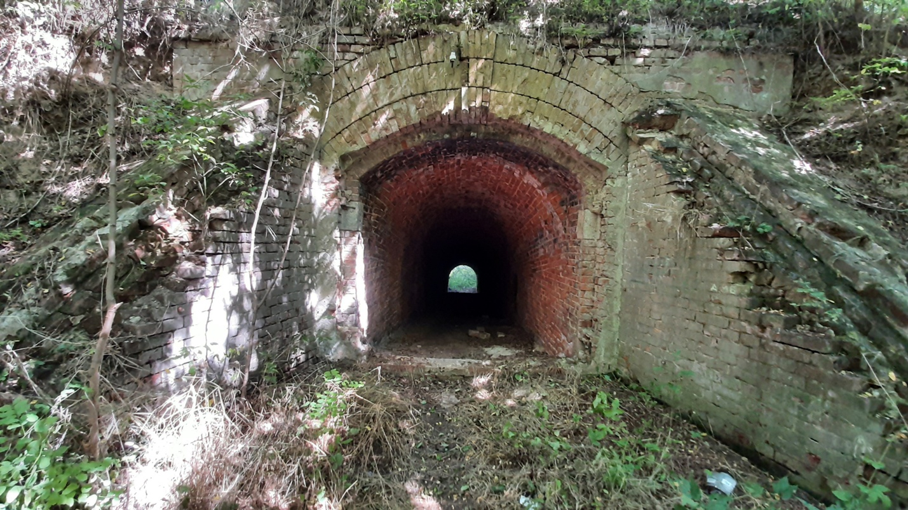
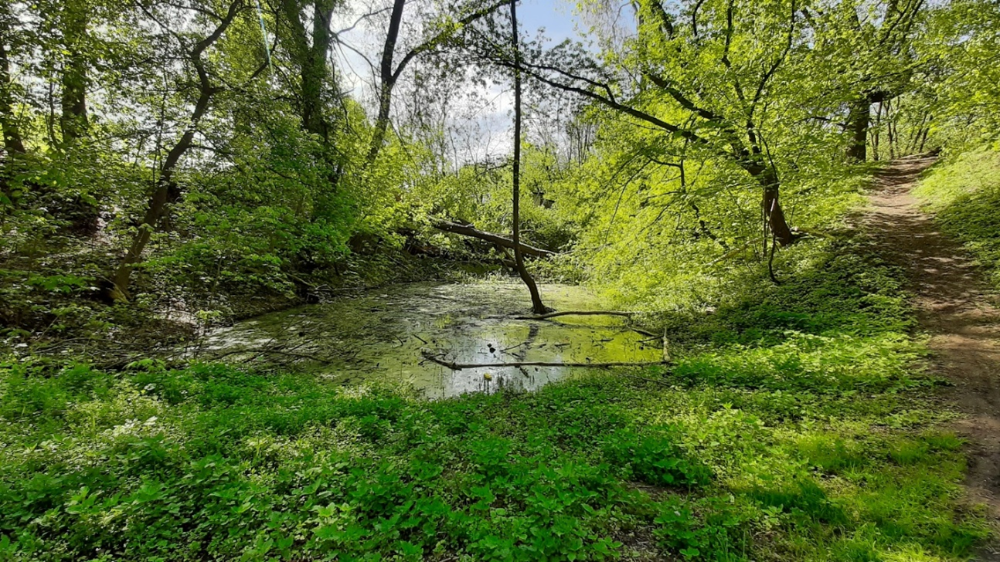
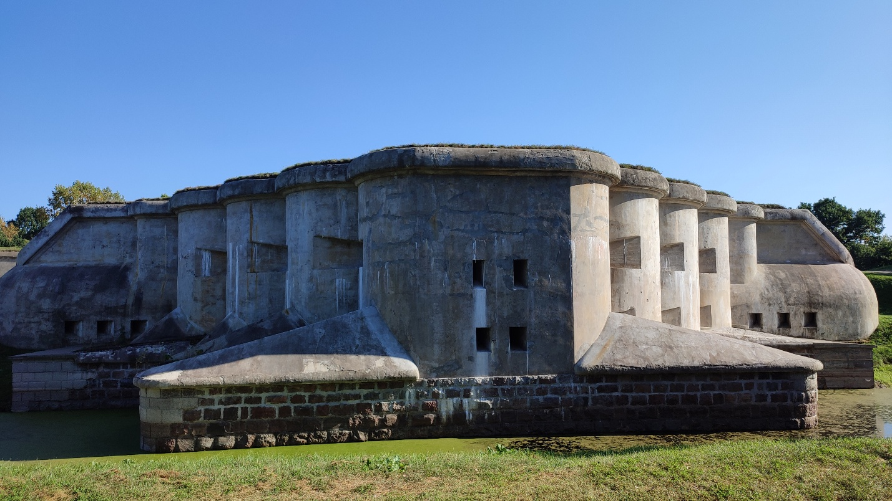

Форт «Граф Берг»
× геодезиста и генерал-фельдмаршала Ф. Ф. Берга – последнего наместника Царства Польского, восточной границей которого служил Западный Буг.
геодезиста и генерал-фельдмаршала Ф. Ф. Берга – последнего наместника Царства Польского, восточной границей которого служил Западный Буг.
Необходимость строительства форта была обусловлена перекрытием северного сектора эспланады крепости в результате строительства железнодорожной линии, связавшей Московско-Брестскую (1869–1871 гг.) и Варшавско-Тереспольскую (1865–1868 гг.) железные дороги. Форт находился на расстоянии всего 850 м от главной оборонительной линии.
Форт имел пятиугольные очертания и боевыми позициями был развернут на северо-запад. Его опоясывал сухой ров. На главном валу находились восемь казематированных траверсов, выполнявших роль убежища для артиллерии и наблюдательных пунктов. Между ними располагались пушки. На флангах дополнительно сужались два земляных траверса. Во внутреннем валу была создана цепочка казематов, связанных потернами (подземными переходами) между собой и казармой. Весь форт сооружался исключительно из кирпича. Укрепления дополнительно обваловывались толстым слоем грунта. На вооружение стояли орудия образца 1867 г., т. е. форт получил самую современную на момент ввода в эксплуатацию артиллерию.

Мощеная дорога связывала форт с Кобринским укреплением через Александровские (Северные, Белостокские) ворота.
В 1911–1914 гг. на территории форта под руководством капитана В. М. Догадина было возведено здание («холодильник») с пониженным температурным режимом для обеспечения хранения продовольствия (около 1650 т мяса и 2 млн порций мясных консервов) для снабжения гарнизона Брест-Литовска.

В 1915 г. в форту размещалась 1-я рота крепостной артиллерии. При приближении к городу и крепости немецко-австрийских войск военные отступили, предварительно эвакуировав все ценное имущество.
После заключения Брестского мира крепость вместе с городом Брест (тогда Брест-над-Бугом) оказалась в составе Польши, став центром Полесского воеводства. В этот период форт «Граф Берг» был переименован в форт имени Сикорского.
В 1941 г. в форту располагался 2-й дивизион 131-го артполка. В связи с плановыми учениями 19–20 июня 5-я и 6-я батареи вместе с имеющимися орудиями выехали в район Брестского полигона. Незначительная часть орудий находилась в мастерской. Таким образом, у оставшихся в расположение форта бойцов было только личное стрелковое оружие. Несмотря на это, защитникам удалось отбить несколько атак фашистов, предпринимая неоднократные попытки прорыва из окружения. К 25 июня гарнизон форт прекратил сопротивление. В годы оккупации 1941–1944 г. на территории форта проходили расстрелы мирных жителей. На здании рефрижератора («холодильника») 28 июля 1944 г. бойцами 212-й стрелковой дивизии 61-й армии І Белорусского фронта было водружено Красное Знамя как символ освобождения Бреста и Брестской области от немецко-фашистских захватчиков.

В послевоенные годы на территории форта разместился Брестский мясокомбинат. Рефрижератор форта «Граф Берг» стал объектом историко-культурной ценности и используется предприятием для хранения производимой продукции. Помимо холодильного здания, от форта сохранились часть валов, встроенная в земляной вал казарма, контрэскарпная галерея, кирпичные казематированные траверсы и некоторые другие фортификационные постройки. В честь освобождения города в июле 2022 г. на здании проходной ОАО «Брестский мясокомбинат» была открыта мемориальная доска.
Внесен в Государственный список историко-культурных ценностей Республики Беларусь.


Форт I
×Форт I расположен примерно в 4 км к северу от Брестской крепости. В настоящее время находится в городской черте Бреста (микрорайон «Козловичи»). Строительство форта велось в 1879–1880 гг. Форт представляет собой укрепление в форме редута (оборонительного сооружения квадратной или многоугольной формы) с двумя фасами, двумя фланками и горжей. В горже был насыпан вал, в котором имелось четыре прохода для сообщения с тылом. Кроме того, форт имел два вала, разделенных сухим рвом. Внутренний вал, более высокий, предназначался для установки на нем артиллерийских орудий. В нем были оборудованы восемь отдельных кирпичных казематов, представляющих собой большие залы со сводчатым потолком. Толщу вала прорезали три потерны, наклонно спускающиеся в более низкий внешний ров, предназначенный для стрелковых позиций пехоты. В каждой потерне было устроено по два пороховых погреба. К горже укрепления примыкали два больших земляных траверса, пересекающих внутреннюю часть укрепления и прикрывающих ее от боковых выстрелов.
По плану усовершенствования укреплений Брестской крепости, в 1909 г. началась его модернизация. На внутреннем вале, над центральной и восточной потернами, были построены броневые наблюдательные пункты, а во внешнем валу началось строительство трех капониров – кофров.
Форт I не принимал участия в боевых действиях. Сохранность его земляных и кирпичных сооружений оценивается на уровень 80 %.
Внесен в Государственный список историко-культурных ценностей Республики Беларусь


(Источник: авторское фото)
(Источник: авторское фото)
Форт II
×Построен в 1878–1880 гг. примерно в 3 км на северо-восток от Брестской крепости, около бывшей д. Граевка, в 1929 г. ставшей микрорайоном города. Форт II Брестской крепости был построен по тому же проекту, что и форты I и III. В отличие от форта I, в его горжевой части располагались три земляных траверса.
Во время оккупации 1941–44 гг. стал местом массовых расстрелов фашистами жителей Бреста. В послевоенное время попал в промышленную застройку и был полностью уничтожен. На соответствующей территории размещаются главным образом промышленно‑складские объекты.


(Источник: Яндекс.Карты)
Форт III
×Построен в 1878–1880 гг. примерно в 4 км на восток от Брестской крепости, около бывшей д. Тришин, в 1968 г. ставшей районом города. Форт III был построен по типовому проекту «Укрепление № 2», общему для фортов I и II.
Летом 1915 г. здесь размещались подразделения 12-й роты и 19-я рота Брест-Литовской крепости. В землянках около форта располагалась 2-я рота 642-й пешей Волынской дружины 87-й бригады Государственного ополчения. Русские части, отступавшие в 1915 г, вывезли вооружение и оставили форт в целостности.
Во время Второй мировой войны форт стал местом массового расстрела мирных жителей. После освобождения города между валами были найдены останки почти 1000 человек.
В первой половине 1960-х гг. форт практически полностью был уничтожен, попав в границы формируемого Брестского Восточного промышленного узла. На месте форта в 1963–1965 гг. были возведены корпуса электромеханического завода. Сохранились лишь три кирпичных каземата, приспособленные под хозяйственные нужды.


(Источник: Яндекс.Карты)
Форт IV
×Форт построен в 1879–1880 гг. в 4 км в юго-восточном направлении от крепости. В настоящее время территория относится к микрорайону «Вулька» (Брест). Изначально имел схожий вид с фортом V (проект 1879 г.) пятиугольной формы и фронтом, развернутым на юго-восток. Форт окружал сухой ров, защищенный с внешней стороны каменной контрэскарпной стеной на фасах и фланках и простреливаемый с двух капониров и двух полукапониров.
В 1881–1888 гг. проводилась модернизация, в результате которой форт стал двухвальным. Однако второй (внешний) вал был обустроен только на фасах, а фланки были защищены лишь внутренним валом. Под валгангом внутреннего вала располагались казематы, сохранявшиеся в неизменном виде в соответствии с изначальным проектом: три пороховых погреба с потернами и восемь убежищ. В центральной части форта была построена сводчатая казарма на одну роту. Очередная модернизация 1910–1912 гг. привела к изменению очертаний форта, а кирпичные стены были укреплены сверхпрочным бетоном. При отступлении царской армии в августе 1915 г. укрепление было взорвано. В связи с эти сохранность форта составляет порядка 30 %. Из оставшихся элементов выделяются внушительные участки рва, остатки вала с одним кирпичным казематом, часть бетонной потерны, горжевой казармы и брусчатка на въездной дороге. В перспективе на месте форта с использованием сохранившихся элементов планируется создание парковой зоны.

(Источник: Новостной портал MediaBrest)


(Источник: авторское фото)
(Источник: авторское фото)
Форт V
×Форт V расположен в южной части Бреста, примерно в 3 км от крепости. Построен в 1878–1880 гг., дважды модернизировался.
Форт построен по типовому плану «Казенный двухвальный». В плане это пятиугольное сооружение, снаружи напоминающее искусственный холм с впадинами и подковообразными «горками» внутри. Форт окружен наполненным водой рвом глубиной до 3 м. Центральная потерна, идущая от горжевого до переднего капонира, делит форт на две симметричные части.

Горжа имеет двухъярусный промежуточный капонир, что отличает форт V от других фортов Брестской крепости. На нижнем уровне горжи расположены восемь орудийных казематов, предназначенных для огневого контроля рва. Площадка под бойницами покрыта толстыми металлическими шипами для пресечения попыток проникнуть в него сбоку. На верхнем ярусе расположены шесть орудийных казематов. Ярусы капонира связаны лестницей. По бокам капонира расположено два каземата, имеющие по три небольших амбразуры.
На первом этаже (ярусе) горжевого капонира начинается центральная потерна. С двух сторон от нее располагается горжевая казарма, имеющая с каждой стороны по семь больших залов и по одному прикрытому сквозником (сквозная закрытая или частично закрытая узкая галерея перед входом в фортификационное сооружение) входу. Помещения казармы с кирпичными сводами пересекают две галереи, образуя длинные анфилады (последовательно соединенные между собой помещения или казематы, расположенные один за другим и связанные дверными проемами) и за пределами казармы переходя в боковые потерны.
За горжевой казармой широкой дугой идет высокий внутренний вал, внутри которого построено пять двухъярусных казематов, три из которых сообщались с потернами. Верхний ярус каждого каземата имеет прикрытый сквозником выход на верх вала, а нижний – в низкий внутренний дворик, где располагались орудия.
На главном валу были оборудованы банкет (специальная земляная ступенька или насыпь внутри крепостной стены (бруствера) для ведения стрельбы поверх стены), 11 средних и 6 малых поперечных траверсов. На вал вело восемь аппарелей (пологая наклонная площадка или земляная насыпь, служащая для подъема или спуска тяжелой военной техники) и четыре подъема. От горжевой казармы через главный вал к фронтальной (передовой) части форта ведет центральная потерна, переходящая в головной капонир.
Первая модернизация V форта была проведена в 1886–1889 гг. В ходе работ была построена кирпичная сводчатая обвалованная казарма, для обстрела рва было построено два капонира и два полукапонира, кроме того, одновальный форт был перестроен в двухвальный, что позволило использовать для обороны как пехоту (на внешнем низком валу), так и артиллерию (на внутреннем высоком).

Форт образца 1889 г. сохранился лишь частично, т. к. попал под модернизацию начала ХХ в., в результате которой был перестроен из двухвального в одновальный. При этом были залиты бетоном все существовавшие ранее кирпичные постройки, изменены очертания водяного рва, возведены бетонные потерны (подземные ходы), связавшие все капониры и полукапониры форта. Работами по реконструкции форта руководил военный инженер И. О. Белинский.
В августе 1915 г. форт V, как и большинство укреплений, был оставлен без боя.
С 1920 г. уцелевший форт заняли польские военные, использовавшие его в качестве склада. В июне 1941 г. здесь дислоцировался 3-й стрелковый батальон 44-го стрелкового полка, входившего в состав 42-й стрелковой дивизии. Бойцы-красноармейцы смогли отразить несколько атак врага, после чего были вынуждены отступить.
После освобождения Бреста от захватчиков в июле 1944 г. форт использовался как армейский склад воинской части. В 1995 г. форт получил статус историко-культурной ценности Республики Беларусь второй категории. На базе форта действует филиал «Музей 5 форт» мемориального комплекса «Брестская крепость-герой».


(Источник: авторское фото)
(Источник: авторское фото)
Форт IX
×Форт IX построен в 1883–1888 гг. в створе между фортами II и III примерно в 4 км на северо-восток от Брестской крепости, рядом с железнодорожной линией «Брест–Москва» и д. Березовка, впоследствии ставшей одноименным микрорайоном Бреста. Изначально представлял собой большую казематированную земляную батарею, аналогично сохранившемуся форту I, но с заполненными водой рвами (обводной канал).

При проектировании форта за основу был взят типовой проект 1879 г. и идеи полковника Р. В. Красовского, представленные им в 1881 г. на страницах «Инженерного журнала». В результате был спроектирован двухвальный форт с водяным рвом треугольного профиля, с сильно закругленными исходящими углами. На главном валу устроено восемь земляных и один казематированный траверс. В горжевой части укрепления был оборудован только один вал и здесь же находился единственный капонир форта, именуемый горжевым. В горжевой части форта располагалась также сводчатая казарма, которая включала шесть жилых казематов для рядового состава и отдельный каземат для офицеров. Для обеспечения отопления в казарме было установлено 12 печей. Боеприпасы форта хранились в трех пороховых погребах с двумя отделениями каждый. Один из них располагался под валгангом главного вала на главной капитали, два – в исходящих углах. Кроме того, в каждом пороховом погребе имелся люк для подачи боеприпасов на валганг. Посредством потерн пороховые погреба соединялись с фоссбреей. В свою очередь в потернах имелись сводчатые казематы, предназначенные для хранения противоштурмовых орудий. Данные орудия при штурме форта противником выкатывались для установки на расположенных в исходящих углах внешнего вала барбетах. Отсутствие центрального капонира, полукапониров и контрэскарпа, а также уменьшение длины потерн позволило добиться существенной экономии средств при строительстве форта.
Вместе с остальными фортами в северном, восточном и южном секторах при отступлении русских войск в 1915 г. был взорван. Во время немецко-фашистской оккупации 1941–1944 гг. стал местом массовых расстрелов военнослужащих и гражданского населения.
Сохранность форта незначительная. Полностью уцелел лишь контур обводненного рва, а также засыпанный землей небольшой участок потерны. На территории форта расположен дендрарий Брестского государственного университета имени А. С. Пушкина.


(Источник: Яндекс.Карты)